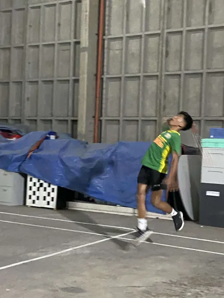

One of my earliest memories of chasing adrenaline—riding an arcade motorcycle. Even if it wasn’t the real thing, it gave me a taste of speed and excitement that still fuels my passion for big bikes today.

Wearing a toga for the very first time felt surreal. It wasn’t just about the ceremony, but the sense of achievement and the reminder that every milestone, no matter how small, pushes me closer to my dreams.

Volleyball has always been more than just a sport for me. It’s about teamwork, quick thinking, and the thrill of every rally. The energy on the court always pushes me to give my best.

Badminton became one of my go-to sports whenever I wanted both fun and focus. It sharpens reflexes and brings out a competitive spirit that keeps me active and sharp.
The feeling of timing a perfect smash is unmatched. It’s that split-second where precision and strength come together, showing how practice really pays off.
Progress doesn’t happen overnight, but looking in the mirror reminds me how far I’ve come. Every rep, every drop of sweat, and every moment of discipline is part of the journey.